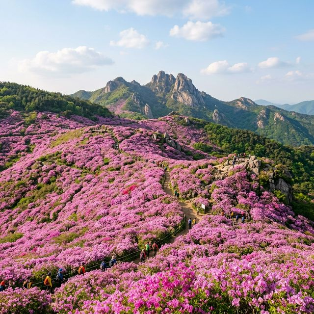
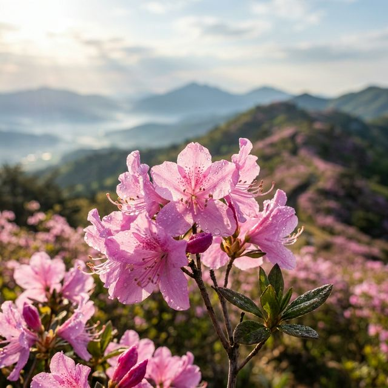
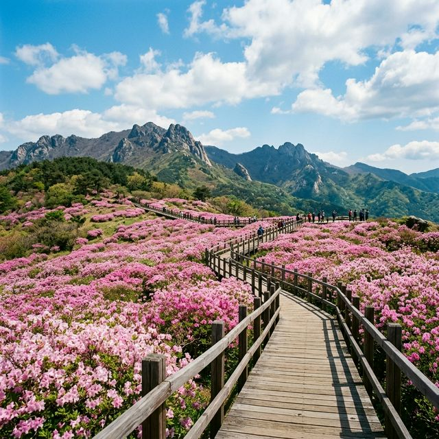

매년 봄, 전국의 꽃 애호가들이 가장 기다리는 축제 중 하나가 바로 황매산 철쭉제입니다. 2026년 공식 축제 기간은 5월 1일(금)부터 5월
10일(일)까지로 확정되었습니다. 고산 지대의 특성상 평지보다 개화가 늦어 보통 4월 말부터 꽃망울이 터지기 시작해 5월 첫째 주에 절정을 이룹니다. 철쭉은 벚꽃보다 생명력이
강해 기상 이변이 없는 한 축제 기간 내내 화려한 모습을 유지하는 것이 특징입니다.
축제 추진위원회는 올해 기온이 예년보다 소폭 높을 것으로 예상하여 5월 3일 전후를 만개 피크로 전망하고 있습니다. 산 하단부부터 상단부까지 순차적으로 피어오르기 때문에
어느 시기에 방문해도 철쭉의 우아함을 누릴 수 있습니다. 다만, 고산 평원의 웅장함을 제대로 느끼고 싶다면 황매평전 전체가 분홍빛으로 물드는 5월 초순을 놓치지 말아야 합니다.
황매산은 합천군과 산청군이 경계를 이루고 있어 양쪽에서 모두 축제가 열리지만, 오늘 소개해 드리는 산청 방면은 접근로가 상대적으로 완만하고 미리내파크라는 현대적인
편의시설이 잘 갖춰져 있어 초보 여행객들에게 더욱 유리합니다. 축제 기간에는 제례 행사를 비롯해 지역 특산물 장터가 열려 풍성한 볼거리를 더해줍니다.

해발 900m 고산 평원을 가득 메운 진분홍빛 철쭉 물결 — AI 제작 이미지
황매산으로 향하는 여러 코스가 있지만, 산청 차황면 방면으로 올라가야 하는 이유는 명확합니다. 이곳에는 은하수를 감상할 수 있는 캠핑장으로 유명한 '황매산
미리내파크'가 위치해 있습니다. 잘 닦인 아스팔트 도로를 따라 차로 해발 800m 인근까지 편안하게 도달할 수 있어, 힘든 등산 과정 없이도 고산 지대의 풍광을 곧바로 만끽할 수
있다는 점이 가장 큰 장점입니다.
특히 산청 코스는 나무 데크 보행로가 아주 정교하게 설치되어 있습니다. 유모차나 휠체어를 이용하는 교통약자들도 철쭉 군락지 한가운데까지 진입할 수 있는 '무장애 나눔길'이
조성되어 있어 진정한 가족형 힐링 명소로 불립니다. 꽃 사이를 걷는 산책로가 넓고 평탄하여 무릎이 불편하신 어르신들도 부담 없이 꽃구경을 즐기기에 최적화된 동선을 제공합니다.
또한 미리내파크 내부에는 카페와 로컬 식당, 화장실 등 깔끔한 인프라가 갖춰져 있어 장시간 야외 활동에도 불편함이 없습니다. 산청 방면에서 바라보는 황매산 정상부는 기암괴석과 철쭉이 어우러져 한 폭의
산수화를 연상시키는 절경을 선사합니다. 탁 트인 시야 덕분에 지리산 천왕봉까지 조망할 수 있는 행운을 누릴 수도 있습니다.
황매산 철쭉의 핵심은 정상이 아니라 정상 아래 넓게 펼쳐진 '황매평전'에 있습니다. 과거 소와 양을 키우던 방목지였던 이곳은 가축들이 독성이 있는 철쭉만 남기고 풀을 뜯어
먹으면서 자연스럽게 거대한 철쭉 군락지가 형성되었습니다. 인간의 인위적인 식재가 아닌 자연이 빚어낸 광활한 규모(약 60만㎡)는 다른 지역의 철쭉 축제와는 비교조차 불가능한 압도적인 스케일을
보여줍니다.
평원 전체가 억새와 철쭉으로 뒤덮여 있어 가을에는 은빛 물결이, 봄에는 분홍 물결이 파도치는 장관을 연출합니다. 2026년에는 군락지 보존 사업이 완료되어 더욱 빽빽하고 선명한 꽃들을 감상할 수 있게
되었습니다. 넓은 평원 덕분에 인파가 몰려도 답답한 느낌이 적으며, 어디서 셔터를 눌러도 달력 사진 같은 결과물을 얻을 수 있는 대한민국 최고의 꽃 사진
성지입니다.
이곳의 철쭉은 키가 사람 어깨높이까지 자라는 경우가 많아 마치 꽃 동굴 속을 걷는 듯한 체험을 선사합니다. 바람이 불 때마다 전해지는 은은한 향기와 고산 지대의 맑은 공기는 일상의 스트레스를 단번에
씻어내기에 충분합니다. 황매평전을 한 바퀴 도는 데는 약 1시간에서 1시간 30분 정도 소요되므로 충분한 시간을 가지고 둘러보시길 바랍니다.

아침 이슬을 머금은 황매산 철쭉의 선명한 빛깔 — AI 제작 이미지
전문 사진작가들이 꼽는 첫 번째 명당은 '별빛 언덕' 인근입니다. 이곳은 고산 지대의 구릉지와 꽃들이 입체적으로 어우러져 황매산의 전체적인 실루엣을 담기에 가장 좋습니다.
특히 해 뜨는 시각에 맞춰 방문하면 붉은 햇살이 꽃잎을 투과하며 만들어내는 몽환적인 분위기를 포착할 수 있습니다. 2026년에는 이 구간에 새로운 전망 데크가 증설되어 관람이 더욱
편해졌습니다.
두 번째는 '하늘 계단' 구역입니다. 가파르지 않은 완만한 계단을 오르는 뒷모습을 촬영하면 마치 끝없이 펼쳐진 핑크빛 꽃길을 따라 하늘로 올라가는 듯한 환상적인 구도가
나옵니다. 계단 주변으로 철쭉이 밀집되어 있어 인물 사진이 가장 화사하게 나오는 곳이기도 합니다. 커플이나 가족 사진을 찍기에 가장 인기 있는 스팟이니 줄을 길게 서기 전 일찍 공략해
보세요.
세 번째는 '억새와 철쭉의 경계' 지점입니다. 황매산은 억새와 철쭉이 공존하는 공간이라, 마른 억새의 은빛 줄기와 생동감 넘치는 분홍 꽃이 대비되는 독특한 보태니컬 배경을
만날 수 있습니다. 다른 곳에서는 보기 힘든 황매산만의 개성이 담긴 사진을 남길 수 있으며, 광각 렌즈를 사용해 광활한 평원을 한꺼번에 담아내는 것이 기술적인 팁입니다.
축제 기간 황매산의 가장 큰 적은 주차입니다. 산청 방면 진입을 위해서는 내비게이션에 '경상남도 산청군 차황면 법평리 산79' 또는 '황매산
미리내파크'를 검색하시면 됩니다. 산 중턱에 위치한 상부 주차장은 주차 대수가 한정되어 있어 오전 8시 이전에 이미 만차되는 경우가 많습니다. 주차에 자신이 없다면 아래쪽의
제1, 제2 임시 주차장을 공략하는 것이 현명합니다.
임시 주차장 이용객들을 위해 축제 기간에는 무료 셔틀버스가 수시로 운행됩니다. 하부에 차를 세우고 셔틀을 이용하면 좁은 산길 도로에서 꼬리를 무는 정체 구간을 피할 수
있어 시간적으로 오히려 이득일 수 있습니다. 특히 2026년에는 셔틀버스의 배차 간격을 10분 이내로 줄여 관람객들의 대기 시간을 대폭 단축했다는 점이 고무적입니다.
단체 관광버스가 몰리는 점심 시간대(11:00~14:00)는 가급적 피하시길 바랍니다. 가능하다면 평일 방문을 권장하며, 부득이하게 주말에 가야 한다면 새벽 6시경에 출발하여 '아침
노을과 철쭉'을 함께 감상하고 오전 10시 이전에 하산하는 일정을 추천합니다. 입장료와 주차료는 모두 무료로 운영되어 경제적인 부담 없이 즐길 수 있는 축제입니다.
황매산은 해발 고도가 높기 때문에 평지의 날씨만 믿고 가벼운 옷차림으로 나섰다가는 큰코다칠 수 있습니다. 산 아래는 따뜻한 봄날씨여도 정상 부근은 세찬 바람과 함께 기온이 5~10도 이상 낮을 수
있습니다. 따라서 바람막이 점퍼나 얇은 패딩 등 체온을 유지할 수 있는 겉옷을 반드시 챙겨야 합니다. 겹쳐 입기(Layering) 전략이 황매산 여행의
핵심입니다.
또한 고산 지대의 자외선은 매우 강렬합니다. 그늘이 거의 없는 평원이므로 선글라스, 챙이 넓은 모자, 자외선 차단제는 선택이 아닌 필수입니다. 챙이 없는 캡형 모자보다는
목 뒷부분까지 가려주는 스타일이 피부 보호에 유리합니다. 꽃구경에 집중하다 보면 자차를 타기 전까지 몇 시간 동안 햇볕에 노출되므로 꼼꼼하게 대비하시기 바랍니다.
신발은 반드시 편한 운동화나 트레킹화를 신으세요. 산책로가 잘 되어 있다고는 하지만 비포장 흙길과 돌계단이 섞여 있어 구두나 슬리퍼는 발목 부상의 위험이 있습니다. 또한
수분 보충을 위한 생수와 간단한 간식을 가방에 넣어가면 정상에서 여유롭게 경치를 감상하며 피크닉 분위기를 낼 수 있습니다.

철쭉 사이로 난 포장된 산책로를 따라 여유롭게 걷는 가족 관광객들 — AI 제작 이미지
황매산 철쭉만 보고 돌아가기 아쉽다면 인근의 산청 동의보감촌을 꼭 들러보시길 바랍니다. 이곳은 국내 최대 규모의 한방 테마파크로, 황매산에서 차로 약 30분 거리에 위치해
있습니다. 기(氣)를 받는 것으로 유명한 귀감석을 만져보고 야외 약초 공원을 산책하며 진정한 건강 힐링을 경험할 수 있습니다. 철쭉으로 안구 정화를 했다면 동의보감촌에서는 몸의 활력을 충전하는
코스입니다.
전통의 미를 느끼고 싶다면 남사예담촌도 훌륭한 대안입니다. '한국에서 가장 아름다운 마을 1호'로 지정된 이곳은 고즈넉한 한옥과 아름다운 황토 담장이 어우러져 고전적인
정취를 풍깁니다. 마을 입구의 회화나무 두 그루가 교차하여 만든 '부부나무'는 연인들에게 인기 있는 포토존입니다. 황매산의 광활한 자연과는 또 다른 차분하고 깊이 있는 여행의 맛을 느낄 수
있습니다.
이처럼 산청은 자연과 인문학적 요소가 조화롭게 배치된 여행지입니다. 당일치기로는 다소 벅찰 수 있으니, 미리내파크 오토캠핑장이나 인근 한옥스테이에서 1박을 하며 느긋하게 산청의 봄을 탐닉해 보시는 것은
어떨까요? 2026년 봄, 산청은 그 어느 때보다 따스하고 향긋한 모습으로 여러분을 기다리고 있을 것입니다.
금강산도 식후경이라 했습니다. 산청 여행에서 빼놓을 수 없는 별미는 바로 '산청 흑돼지'입니다. 지리산 자락에서 건강하게 자란 흑돼지는 육질이 쫄깃하고 담백하여 일반
돼지고기와는 차원이 다른 풍미를 자랑합니다. 축제장 인근 차황면이나 산청읍내의 고깃집 어디를 가도 실패 없는 맛을 보장합니다. 참숯에 구워낸 흑돼지 구이는 꽃구경으로 소진된 체력을 보충하기에
제격입니다.
담백한 음식을 선호하신다면 '약초 비빔밥'을 추천합니다. 동의보감의 고장답게 산청에서 채취한 다양한 산나물과 귀한 약초들이 들어간 비빔밥은 한 입 먹을 때마다 몸이
건강해지는 느낌을 줍니다. 고추장 대신 간장 소스를 곁들여 나물 본연의 향을 즐기는 것이 산청 방식의 식도락입니다. 곁들여 나오는 맑은 된장찌개와의 조합은 그야말로 일품입니다.
후식으로는 지리산에서 재배한 산청 곶감을 맛보세요. 당도가 높고 식감이 부드러워 임금님 진상품으로도 유명했던 산청 곶감은 여행 선물로도 인기가 점수가 높습니다. 축제장
로컬 마켓에서 저렴하게 구매할 수 있으니 하나쯤 챙겨서 돌아오는 차 안에서 주전부리로 즐겨보시길 바랍니다.
성공적인 여행을 위해 마지막으로 점검해야 할 사항은 '실시간 개화 정보'입니다. 고산 평원의 꽃은 단 하루 차이로 풍경이 달라질 수 있습니다. 산청군청 공식 인스타그램이나
전국 꽃축제 통합 앱에서는 매일 아침 드론 촬영 영상을 통해 개화율을 퍼센트(%) 단위로 공지합니다. "지금 가면 피었을까?" 하는 의문이 든다면 블로그 후기보다는 공신력
있는 기관의 최신 이미지를 확인하는 것이 가장 정확합니다.
또한 교통 통제 구간과 일방통행로를 미리 숙지하세요. 축제의 원활한 운영을 위해 특정 구간은 버스 전용 차로로 운영되거나 우회로를 이용해야 할 수도 있습니다. 안내 요원의 수신호에 적극 협조하는 매너
있는 태도가 모두의 즐거운 관람을 돕습니다. 쓰레기는 반드시 회수하여 지정된 곳에 버리는 성숙한 LNT(Leave No Trace) 정신을 발휘해 주시길
부탁드립니다.
2026년의 첫 황금연휴를 장식할 황매산 철쭉제. 진분홍 꽃대궐 속에서 사랑하는 이들과 함께 인생의 가장 화려한 봄날을 기록해 보시기 바랍니다. 철쭉의 꽃말처럼
'사랑의 기쁨'이 가득한 여행이 되길 진심으로 기원하며, 여러분의 방문이 산청의 아름다운 자연을 보존하는 힘이 되기를 바랍니다.